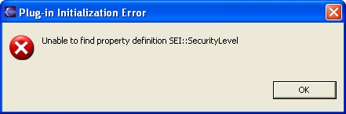

Previous
Next
Previous
Next 
| 5.4 Implementing the Security Level Plug-in |
Here
we complete the description of the security level plug-in and use it to introduce the
following OSATE API capabilities, which are more fully described in subsequent sections:
- How to look up a property value.
- How to manipulate a number value.
- How create a new number value.
- How to set a property value.
The
security level analysis runs in two passes:
- The first pass checks both that subcomponents are contained in more secure components and infers missing security levels.
- The second pass checks that connections flow from lower level to higher level components.
We
need two passes because we cannot check connections until we are sure that all
components have a security level associated with them. We must, therefore, visit all the
components first to make sure that any inferred property values have bubbled all the way
up
the component containment hierarchy. We implement each pass as a separate subclass of
AadlProcessingSwitch.
| 5.4.1 Getting the Property Declaration and Driving the Analysis |
The CheckSecurity class, our Eclipse action class for driving the analysis,
is shown below.
The class demonstrates how to initialize static references to property definitions once at the
beginning of an analysis. This avoids having to find the property definition every time it is
needed, which in this case would be every time a component is visited by the analysis. Class
AaxlReadOnlyAction (superclass of AaxlModifyAction, which our action extends)
declares the method initPropertyReferences(). This method is called before
doAaxlAction is called. The default implementation does nothing; actions that use properties,
however, should override this method to initialize references to any property definitions, types,
and constants used by the analysis. The recommended pattern is for references to these
elements to be public static volatile fields of the action class. That way they
can be easily
referenced from instances of the model traversal classes and other helper classes.
Property definitions, types, and constants are looked up using the methods
AaxlReadOnlyAction.lookupPropertyDefinition,
AaxlReadOnlyAction.lookupPropertyType, and
AaxlReadOnlyAction.lookupPropertyConstant which are summarized in the table below.
If the definition is not found, these methods return null and also update an internal list of
unfound definitions. The methods lookupOptionalPropertyDefinition,
lookupOptionalPropertyType, and lookupOptionalPropertyConstant return the
definition, or null if not found, but do not update the list of unfound definitions. It
is assumed
the plug-in is written to function correctly when an optional definition is absent. After
initPropertyReferences returns, if any of the items are not found, then instead of calling
doAaxlAction, a dialog box is presented to the user listing those elements that were not
found; see Figure 27 for an example. These methods are implemented using calls to the
property lookup methods in OsateResourceManager that are described in Section 5.8.2
Getting PropertyDefinition Objects.
|
Operation
|
Method
|
|
Look
up a predeclared property, i.e.,
one declared in Aadl_Properties or
Aadl_Project
|
PropertyDefinition
lookupPropertyDefinition(
String name) |
|
Look
up a property in the named
property set
|
PropertyDefinition
lookupPropertyDefinition(
String propertySet, String name) |
|
Lookup
an optional property in the
named property set
|
PropertyDefinition
lookupOptionalPropertyDefinition(
String propertySet, String name) |
|
Look up a predeclared property type
|
PropertyType
lookupPropertyType(
String name) |
|
Look
up a property type in the named
property set
|
PropertyType
lookupPropertyType(
String propertySet, String name) |
|
Look
up an optional property type in
the named property set
|
PropertyType
lookupOptionalPropertyType(
String propertySet, String name) |
|
Look
up a predeclared property
constant
|
PropertyConstant
lookupPropertyConstant(
String name) |
|
Look
up a property constant in the
named property set
|
PropertyConstant
lookupPropertyConstant(
String propertySet, String name) |
|
Look
up an optional property constant
in the named property set
|
PropertyConstant
lookupOptionalPropertyConstant(
String propertySet, String name) |

Figure
27: Example error dialog reporting that property set elements needed by a plug-in could not be found.
If your plug-in has other preconditions that it checks before performing its
analysis, and you
want to report all the errors together, the default error reporting can be suppressed by
overriding the method suppressErrorMessages() so that it returns true. In this case,
doAaxlAction will always be called, and it is your responsibility to check whether there were
any errors in initPropertyReferences and to react appropriately. You can check for errors
using the method hasPropertyLookupErrors(). You can get a list of the property set
elements that were not found by calling getPropertyLookupErrors(), which returns a List
of Strings identifying those elements that were not found. The strings are of the form
"property definition propertySet::name", "property type propertySet::name",
and
"property constant propertySet::name" as appropriate.
Our security level analysis is implemented as an AaxlModifyAction, because
it may modify
the model by inserting inferred property values. It uses the default error handling mechanism
because it has no other preconditions to check. The action uses two different model traversal
classes, one for each pass described above. For the first pass, analysis invokes the
processBottomUpComponentImpl method, which visits the components in an order that
insures that a component is visited before any of the components that reference it are. For the
second pass, a normal pre-order traversal is sufficient.
public
class CheckSecurity extends AaxlModifyAction {
private static final String SECURITYLEVEL = "SecurityLevel";
private static final String SEI_PACKAGE = "SEI";
public static volatile PropertyDefinition securityLevel = null;
protected void initPropertyReferences() {
// Initialize our one property reference
securityLevel =
lookupPropertyDefinition(SEI_PACKAGE, SECURITYLEVEL);
}
public void doAaxlAction(AObject obj) {
if (obj == null) return;
final AObject as = obj.getAObjectRoot();
/* Ensure that enclosing component security level encompasses
* contained security levels.
*/
if (as instanceof AadlSpec) {
final ComponentSecuritySwitch componentSecuritySwitch =
new ComponentSecuritySwitch(getMarkerReporter());
// Walk up the component implementation reference hierarchy
componentSecuritySwitch.processBottomUpComponentImpl(
(AadlSpec) as);
// Check security along connections
final ConnectionSecuritySwitch connectionSecuritySwitch =
new ConnectionSecuritySwitch(getMarkerReporter());
connectionSecuritySwitch.processPreOrderAll(as);
}
}
}
| 5.4.2 Class ComponentSecuritySwitch |
Checking
the security levels of the declarative components is a straightforward task: get the
security level of the component and compare it against the security levels of its subcomponents.
Because we are also interested in being able to correct the security level of the components,
we actually first find the maximum security level of the subcomponents, and then compare that
value against the component’s value. If the component’s value is non-existent or less
than the
maximum subcomponent value, then we upgrade the component’s SecurityLevel property
association.
To
get the property values we use the method
PropertyHolder.getSimplePropertyValue(PropertyDefinition), which is a convenience
method for getting a property value that is not expected to be modal and is not list-valued. The
method returns a PropertyValue object, or null if the property value is undefined, is
a list, or
depends on modes. We reference the property declaration of the SecurityLevel property
using the previously initialized static reference CheckSecurity.securityLevel. Once we
have
the property value, we check that it is an IntegerValue, which also checks that the value is
non-null, and get the value as a long by casting the object back to an IntegerValue
and
invoking getValue().
When
the security level of the component must be set, either because no value was found or
because the value is not high enough, we create a new IntegerValue object, set its value, and
then set the property value. We always create a new PropertyValue object rather than
modifying the object obtained from looking up the property value, because we do not know
from where in the model—if at all—the property value object comes, and modifying it directly
may have unintended consequences; see Section 5.5 Getting Simple Property Values for
more information. We set the value of the IntegerValue object using the method
setNewValue(long), which makes sure the value’s numeric and string representations are
consistent; see Section 5.6.6 Setting Number Values. Finally, we associate the new
value
with the property for the component using
PropertyHolder.setPropertyValue(PropertyDefinition, PropertyValue). This method is
one of several property setting methods described in more detail in Section 5.8.5.1 Setting
Property Associations.
public class ComponentSecuritySwitch
extends AadlProcessingSwitch {
public ComponentSecuritySwitch(MarkerReporter
er) {
setReporter(er);
}
protected final void initSwitches()
{
componentSwitch
= new ComponentSwitch() {
public
Object caseComponentImpl(ComponentImpl ci) {
// Get my security level, if declared
final PropertyValue cipv =
ci.getSimplePropertyValue(CheckSecurity.securityLevel);
long cilv = 0;
if (cipv instanceof IntegerValue) {
cilv = ((IntegerValue) cipv).getValue();
}
// Get the max security level of my subcomponents
long maxslv = 0;
final EList subs = ci.getXAllSubcomponent();
for (Iterator it = subs.iterator(); it.hasNext();) {
final Subcomponent sub = (Subcomponent) it.next();
final ComponentImpl sci = sub.getComponentImpl();
if (sci != null) {
PropertyValue scipv =
sci.getSimplePropertyValue(CheckSecurity.securityLevel);
if (scipv instanceof IntegerValue) {
long slv = ((IntegerValue) scipv).getValue();
// Update max subcomponent security level
if (slv > maxslv) maxslv = slv;
}
}
}
if (maxslv > cilv) {
/* Subcomponents have higher security level than me.
* Update my declared security level.
*/
if (cipv != null) { // My declared level is wrong
reportWarning(ci,
"Security level updated from " +
cilv + " to the maximum of the subcomponent values: " +
maxslv);
} else { // Didn't have a declared level
reportWarning(ci,
"Security level set to the maximum of the " +
"subcomponent values: " + maxslv);
}
// Create new property value: An Integer value
final IntegerValue newpv =
PropertyFactory.eINSTANCE.createIntegerValue();
// Set to max security level
newpv.setNewValue(maxslv);
// Set the property association
ci.setPropertyValue(CheckSecurity.securityLevel, newpv);
}
return DONE;
}
};
}
}
| 5.4.3 Class ConnectionSecuritySwitch |
To
check a connection we need the security levels of the connections end points. These are
retrieved from the source and destination context components of the connections. The
methods Connection.getAllSrcContextComponent() and
Connection.getAllDestContextComponent() get the Subcomponent or ComponentImpl
that is the source or destination of the connection. It is not sufficient to use the
Connection.getXAllSrc() and Connection.getXAllDest() methods, because when the
connection is made through a port group, the latter pair of methods return the port group
features that participate in the connection, whereas the former pair of methods search beyond
the port group to find the component that contains the port group.
Once
we have the end points of the connection, we get the property value associated with
SecurityLevel as described above, and
compare the level of the source component against
the level of the destination component.
public class ConnectionSecuritySwitch
extends AadlProcessingSwitch {
public ConnectionSecuritySwitch(MarkerReporter
er) {
setReporter(er);
}
protected final void initSwitches()
{
connectionSwitch
= new ConnectionSwitch() {
public
Object caseConnection(final Connection conn) {
// Ignore access connections
if (conn instanceof DataAccessConnection
|| conn instanceof BusAccessConnection) {
return DONE;
}
// Get the connection contexts
final PropertyHolder scxt = conn.getAllSrcContextComponent();
final PropertyHolder dcxt = conn.getAllDstContextComponent();
if (scxt == null || dcxt == null) return DONE;
// Get the security levels of the end points
final PropertyValue spv =
scxt.getSimplePropertyValue(CheckSecurity.securityLevel);
final PropertyValue dpv =
dcxt.getSimplePropertyValue(CheckSecurity.securityLevel);
long slv = 0;
if (spv instanceof IntegerValue) {
slv = ((IntegerValue) spv).getValue();
}
long dlv = 0;
if (dpv instanceof IntegerValue) {
dlv = ((IntegerValue) dpv).getValue();
}
// Error if source level is higher than the dest level
if (slv > dlv) {
reportError(conn,
"Security level violation: Source has level " + slv +
" and destination has level " + dlv);
}
return DONE;
}
};
}
}